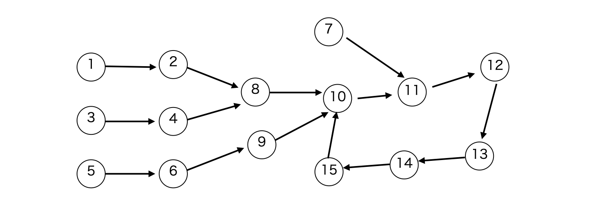
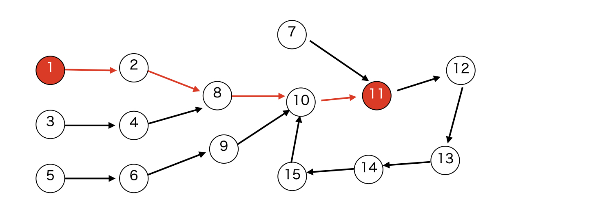

ダブリングとはなんですか -> \(2^{k-1}\) 個先のさらに \(2^{k-1}\) 個先は \(2^k\) 個先という事実、これにつきます。ダブリングの目的は、ある状態から \(x\) 回遷移した時、どの状態になっているかを求めることです。
ダブリングすることができる対象は、Functional Graph (各頂点から、高々 \(1\) 本以下の辺が出る有向グラフ) です。

例えば、このグラフで頂点 \(1\) から辺に沿って \(4\) 回移動した結果は一意に \(11\) と定まります。

これを効率的に計算しますが、その前に愚直な方法として以下のような DP を考えてみましょう。
ところで、\(x = a + b\) と書けるとき、\(\mathrm{DP}(s,x) = \mathrm{DP}(\mathrm{DP}(s,a),b)\)、つまり \(\mathrm{DP}(s,x) \) は \(s\) から \(a\) 移動してさらに \(b\) 移動したものですよね。
mod library の記事の modpow で紹介したように、\(x\) を二進数表示してビットが \(1\) の部分 \(b_0,b_1,b_2,\dots\) に対して \(s\) から順番に \(2^{b_i}\) ずつ移動すると、\(x = \sum{2^{b_i}}\) なので \(s\) から \(x\) 移動した地点に到達しますね。
よって、用意するべき DP テーブルは以下でした。
(modpow (高速累乗) は DP テーブル (遷移の有向グラフ) を陽に持たないダブリングと言えます。)